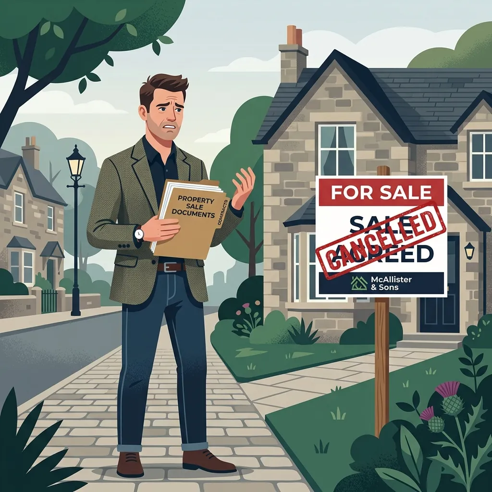

What Happens if a House Buyer Pulls Out in Scotland?

If your buyer withdraws before missives are concluded, they can generally do so without legal penalty. However, once missives are concluded, the agreement is normally binding, and a withdrawal may constitute a breach of contract with serious financial consequences. You should contact your Scottish solicitor immediately to confirm your exact rights, as they depend entirely on the specific wording and status of your transaction.
The first question: have missives been concluded?
The Scottish conveyancing system is entirely distinct from the process in England and Wales. When an offer is accepted in Scotland, it does not instantly create a legally binding contract. The "missives" are a series of formal letters exchanged between the buyer’s solicitor and the seller’s solicitor, negotiating the terms and conditions of the sale.
Once missives are concluded there is a binding contract, subject to its terms and any outstanding conditions. Ask your solicitor to confirm the precise position before acting. Read the Scottish Government explanation of missives.
Scottish Transaction Stages: When Can a Buyer Withdraw?
| Transaction Stage | Can the Buyer Withdraw? | Possible Consequences | Seller's Immediate Action | Professional Help Required |
|---|---|---|---|---|
| Verbal interest only | Ask the solicitor to confirm whether a binding contract exists. | Depends on the contract and costs already incurred. | Continue marketing | Estate Agent |
| Offer submitted | Ask the solicitor to confirm whether a binding contract exists. | Depends on the contract and costs already incurred. | Reject or seek other offers | Solicitor / Agent |
| Offer accepted (verbal/informal) | Ask the solicitor to confirm whether a binding contract exists. | Depends on the contract and costs already incurred. | Await formal written offer | Solicitor |
| Qualified acceptance issued | Ask the solicitor to confirm whether a binding contract exists. | Wasted legal/survey fees | Ask your solicitor to confirm the contract status and next steps. | Solicitor |
| Missives still being negotiated | Ask the solicitor to confirm whether a binding contract exists. | Wasted legal fees | Prepare to relist the property | Solicitor |
| Missives concluded | Only as allowed by the contract or law; obtain advice. | Possible breach; remedies and recoverable losses need assessment. | Ask the solicitor to assess notices, remedies and the next sale steps. | Solicitor (Litigation) |
| Suspensive condition outstanding | Depends on the exact condition and required notices. | Depends on the contract and costs already incurred. | Confirm contract status before accepting another offer | Solicitor |
| Settlement imminent | Depends on the contract and any valid withdrawal right | Possible breach; remedies and recoverable losses need assessment. | Ask the solicitor to assess notices, remedies and the next sale steps. | Solicitor (Litigation) |
| Buyer fails to settle | Depends on the contract and any valid withdrawal right | Possible breach; remedies and recoverable losses need assessment. | Ask the solicitor to assess notices, remedies and the next sale steps. | Solicitor (Litigation) |
Can a buyer withdraw after their offer is accepted?
Your options depend entirely on the stage of the legal process.
Accepted offer but missives are still being negotiated
An accepted offer does not by itself establish that a binding contract exists. If missives have not concluded, withdrawal is generally possible without a contractual penalty. Ask your solicitor to confirm the correspondence, costs and any conditions that apply.
Missives have been concluded
Once missives are concluded, the buyer is legally bound to purchase the property on the agreed date of entry (settlement). If the buyer simply changes their mind or withdraws without a valid contractual reason, they are in breach of contract. Your solicitor can advise you on pursuing them for damages.
The buyer withdraws shortly before settlement
A failure to settle under concluded missives may be a breach. Your solicitor should check the contract, any notice requirements, potential interest and remedies before you take further steps. Termination, compensation and the amount recoverable are not automatic.
Suspensive conditions have not been satisfied
Missives can include conditions affecting the parties’ obligations. Your solicitor should check the precise wording, deadlines and notice requirements. A funding problem does not automatically create a right to withdraw.
What to do immediately when your buyer pulls out
Contact your solicitor
Do not rely on what the estate agent says about liability, and do not confront the buyer directly. Ask your solicitor to confirm the exact legal status of the missives and whether any suspensive conditions apply.
Establish exactly why the buyer withdrew
Understanding the reason is vital. If they withdrew because of a personal change of circumstance, the property is fine. If they withdrew because their surveyor identified a structural defect, you must address that defect before trying to sell again.
Confirm the status of the missives
Ask your solicitor whether a binding contract exists, what steps are needed to end it and when you are free to accept another offer. Do not assume that the buyer’s message alone releases you from your obligations.
Protect your onward purchase
Inform the solicitor handling your onward purchase promptly. Discuss any contractual deadline and whether an extension is possible. Obtain appropriate advice before considering borrowing to bridge a funding gap.
Calculate the immediate costs and losses
If you are entitled to claim damages, you need to track your losses. These might include ongoing mortgage payments, additional council tax, bridging loan interest, and extra legal and marketing fees.
Decide whether to remarket immediately
If your solicitor confirms you are free to proceed, compare relisting with addressing the reason for withdrawal. A Home Report does not automatically expire after 12 weeks of continuous marketing. Ask your solicitor and surveyor whether the marketing history or buyer’s lender requires updated documents.
Choose the next step with your solicitor
- Confirm whether missives have concluded and what conditions remain.
- If there is a binding contract, ask about notices, remedies and whether you can accept another offer.
- If you are free to proceed, investigate why the buyer withdrew and compare relisting, addressing an issue or another sale route.
- Check the next buyer's funding and conditions before agreeing a new timetable.
Diagnostic Checklist: Why the Sale Failed and What to Do
| Reason the Sale Failed | Evidence to Obtain | Can it be Corrected? | Effect on Next Sale | Best Next Action |
|---|---|---|---|---|
| Mortgage Refusal | Buyer's solicitor confirmation | Yes, by finding a cash buyer or different lender | High, if property is deemed unmortgageable | Verify if refusal was due to buyer finances or property condition |
| Down Valuation | Lender's valuation report figure | Yes, by adjusting asking price or finding cash | Moderate; next buyer may face same valuation limit | Review pricing strategy against Home Report |
| Repair Concern | Specific survey feedback (e.g. damp, roof) | Yes, by conducting repairs before relisting | High, if issue remains unresolved | Obtain a specialist quote for the required work |
| Title Problem | Details of missing warrants or boundary issues | Yes, via solicitor or indemnity insurance | High, until legally resolved | Instruct solicitor to rectify title defects immediately |
| Chain Collapse | Confirmation of which link failed | No, outside your control | None on the property itself | Once free to proceed, compare funding and conditions of other buyers |
| Buyer Changed Mind | Stated reason via estate agent | Depends on the contract and any valid withdrawal right | Depends on the contract and costs already incurred. | Confirm you are free to proceed, then contact interested parties |
| Slow Legal Process | Timeline of correspondence | Yes, by actively managing the next transaction | Depends on the contract and costs already incurred. | Set clear timeline expectations with solicitor for next sale |
| Attempted Late Price Reduction | The revised offer amount and justification | Depends on the contract and any valid withdrawal right | None, assuming you rejected the reduction | Relist and ensure Home Report is transparent |
| Missing Property Documentation | List of missing certificates (e.g. boiler, alterations) | Ask the solicitor to confirm whether a binding contract exists. | Moderate, causes delays | Gather all required compliance documents before relisting |
Why do Scottish house sales fall through?
Transactions fall through for many reasons, but the most common practical causes include:
- The buyer’s mortgage application fails: Even with an agreement in principle, a lender's final underwriting can result in a refusal.
- The lender values the property below the agreed price: If a buyer offers £20,000 over the Home Report valuation, but their lender values the property at the Home Report figure, the buyer must bridge the gap in cash. If they cannot, the sale collapses.
- Home Report or specialist-survey concerns: A Category 3 rating for damp or timber rot often scares buyers away or leads to mortgage refusal. Read our guide on Scottish Home Report requirements.
- A related property chain collapses: If the buyer fails to sell their own home, they cannot proceed with the purchase of yours.
- Legal or title problems emerge: Unauthorized alterations without building warrants are a frequent cause of late-stage withdrawal.
Can you claim compensation from the buyer?
Before missives are concluded
No. If missives are not concluded, there is no contract to breach. You cannot claim compensation, even if you have suffered financial loss or lost the house you wanted to buy.
After missives are concluded
Yes, if the buyer withdraws without a valid suspensive condition, they are in breach of contract. Your solicitor can raise a court action for damages.
Losses and damages your solicitor may investigate
If you successfully sue for breach of contract, you can generally claim the difference between the price the defaulting buyer agreed to pay and the price you eventually achieve when reselling the property. You may also claim the costs of remarketing, extra legal fees, and ongoing holding costs (such as a bridging loan). A Scottish solicitor must advise you on what is recoverable.
Why compensation is not automatic
Suing a buyer is expensive and time-consuming. Furthermore, if the buyer has withdrawn because they have lost their job or gone bankrupt, they may have no assets to pay a damages award. You must weigh the legal costs against the likelihood of successful recovery.
What happens to your estate-agent and legal costs?
If a sale falls through before missives, you will normally have to pay your solicitor for the work they have done to date. Your estate agent’s fees depend on your contract. Most agents operate on a "no sale, no fee" basis, meaning you only pay marketing costs (such as photography or portal listing fees) until the property actually sells. Always check your contract.
What if you lose the property you intended to buy?
If your buyer pulls out, you will usually not be able to proceed with your onward purchase unless you secure bridging finance. If missives on your onward purchase were already concluded, you are legally bound to buy that property. In this dangerous situation, you could be sued for breach of contract by your seller, even though it was your buyer's fault. This is why Scottish solicitors try to align the conclusion of missives on both sides of a chain.
Has your buyer pulled out and left you in a chain?
A ready buyer may reduce some funding or chain dependencies, but a proposed purchase still needs assessment, agreement and legal checks. Compare the written terms and net proceeds before relying on a date.
Request a confidential review after a failed saleShould you accept the previous second-best offer?
If you received multiple notes of interest or bids at a closing date, your agent should contact the underbidders immediately. The second-highest bidder may still be looking. However, bear in mind that weeks may have passed, and they may have found another property. You are under no obligation to accept their previous offer.
How to relaunch the property effectively
Contact previous interested parties
This is always the first step. It is the fastest route to a replacement sale.
Review the price and buyer feedback
If the sale fell through because of a low mortgage valuation or survey issues, you must adjust the asking price or fix the issues before remarketing. A property that returns to the market at the same price with the same problems will likely fail again.
Update the Home Report where necessary
Check the marketing history with your solicitor and surveyor. Home Report documents normally need to be recent when marketing starts; continuous marketing does not create an automatic 12-week expiry. A break exceeding 28 days, changed condition or a lender’s requirements may mean updates are needed. See mygov.scot’s first steps for sellers.
Correct the issue that caused the failed sale
If the buyer pulled out due to missing building warrants for an extension, apply for a Letter of Comfort from the local council now. Do not wait for the next buyer’s solicitor to discover the same problem.
How to reduce the risk of another failed sale
Compare each buyer’s funding, chain, conditions and proposed date alongside the price. A mortgage agreement in principle is not a final lending commitment, and a cash buyer can still require checks. Ask your agent and solicitor what has been verified and what remains outstanding.
Estate-agent resale versus auction versus direct buyer
| Route | Potential benefit | Costs and preparation | Funding and timing |
|---|---|---|---|
| Return to the open market | Exposure to a wider buyer pool and competing offers. | Review agent fees, reports and the cause of the failed sale. | Allow time to find a buyer; verify funding, chain and contract conditions. |
| Approach previous bidders | An interested buyer may already know the property. | Check existing agent commission and whether reports need updates. | Confirm the bidder is still interested and reassess funds and conditions. |
| Property auction | May suit unusual or refurbishment properties. | Check reserve, fees, reports and legal-pack requirements. | The sale format determines the binding point and completion terms; a sale is not guaranteed. |
| Direct purchase or investor introduction | An investor may consider condition or other constraints. | Compare the price discount, legal costs, any fees and existing agency obligations. | Identify the actual purchaser and verify funds; settlement depends on assessment, contract and legal checks. |
When a direct, chain-free sale may be worth considering
Wider marketing can help you compare offers. A direct offer may also be worth assessing after a failed sale, especially for a property needing repairs. Check with your solicitor that you are free to proceed, then compare net proceeds, conditions and a realistic timetable.
Some investors will consider a property in its current condition. An offer may be below open-market value to reflect repairs, holding costs and risk. Agree the accepted condition, contents, price and any costs in writing; no sale or settlement date is guaranteed.
Seven-day recovery plan after a failed sale
Frequently asked questions
Can a buyer withdraw after an offer is accepted in Scotland?
Withdrawal is generally possible before a binding contract is formed, but ask your solicitor to confirm the correspondence, conditions and costs in your case. Do not infer the contract’s status solely from the phrase “offer accepted”.
Is an accepted offer legally binding?
An informal acceptance does not by itself establish whether missives have concluded. Ask your solicitor to confirm the status of the written exchange and explain the obligations and any remaining conditions.
When do missives become binding?
Missives become binding when all terms and conditions raised in the qualified acceptances have been agreed, and one solicitor issues a final formal letter concluding the bargain.
What happens if the buyer withdraws before missives?
The transaction collapses and neither party can claim compensation from the other. You will need to put the property back on the market, and both you and the buyer will usually have to pay your own solicitor and survey costs incurred so far.
What happens if the buyer withdraws after missives?
Unless they are relying on an unfulfilled suspensive condition written into the contract (such as failing to secure a mortgage), a buyer withdrawing after concluded missives is in breach of contract. The seller may pursue them for financial damages.
Can the seller claim compensation?
If the buyer breaches a concluded contract, the seller can claim compensation for losses. This usually includes the difference in price if the property is resold for less, plus additional legal, marketing and ongoing mortgage costs. However, compensation is not automatic and requires legal action.
Who pays the legal fees when a sale falls through?
If missives were not concluded, both the buyer and the seller are responsible for paying their own solicitor for the work completed to date.
Can I contact the previous second-highest bidder?
Yes. Your estate agent can contact parties who previously noted interest or submitted lower bids to see if they are still in a position to proceed.
Do I need a new Home Report?
Not automatically. The marketing history, current condition and lender requirements matter. A Home Report does not automatically expire after 12 weeks of continuous marketing. Ask the solicitor and surveyor what is required before relisting.
Can a direct buyer purchase after a failed sale?
A direct buyer may be willing to assess a property after a failed sale. Establish who is buying, verify funds and check conditions and legal readiness. A proposed cash purchase does not guarantee that an onward-purchase deadline can be met.
Compare your next sale with a direct offer
A failed property sale is incredibly frustrating, especially if it breaks a chain. If you cannot afford to wait months for another open-market buyer to secure a mortgage, you can compare an estate-agent sale with a direct buyer.
We assess properties across Glasgow and Central Scotland. Tell us what happened with your previous transaction and we’ll discuss whether a direct purchase or investor introduction could suit you. Offers may be below open-market value.
Sources and your next step
General information for property owners; ask a Scottish solicitor or appropriate adviser about your circumstances. The source links were checked for this content update on 11 October 2026.
Related seller guidance
Explore our property sale service or discuss your property. We may buy directly or discuss an investor introduction; offers may be below open-market value.